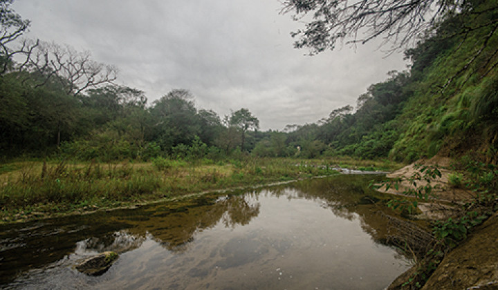
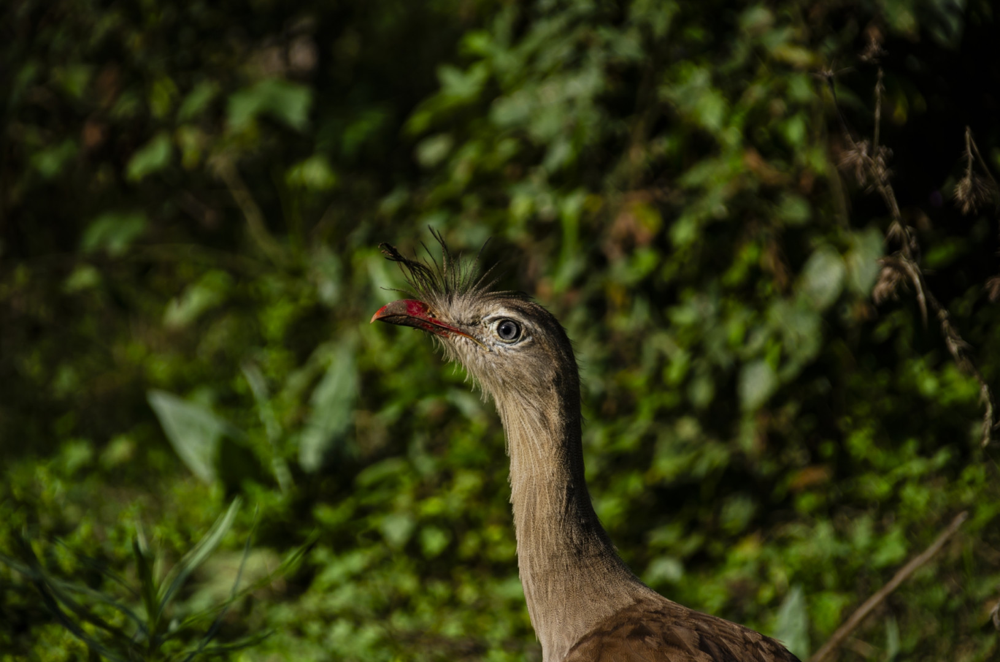
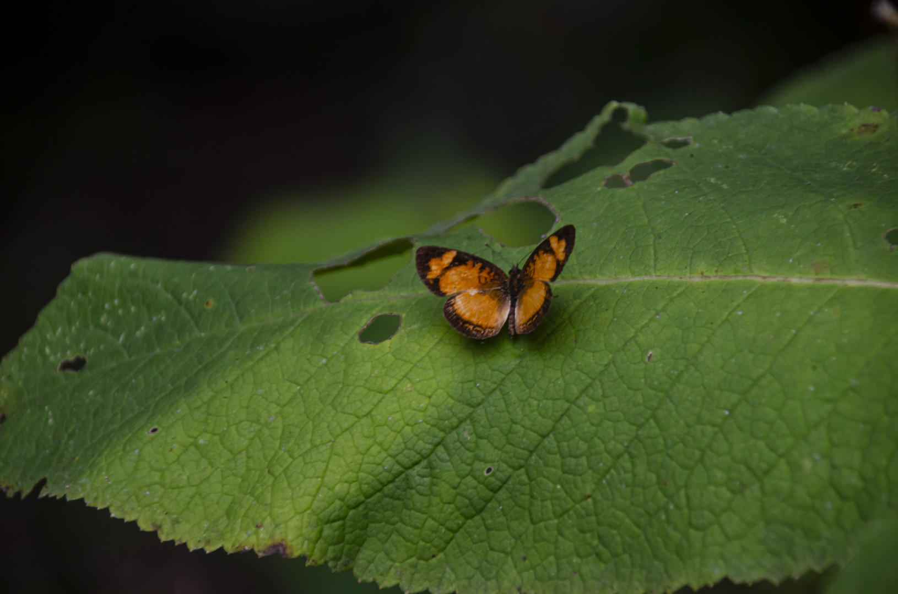
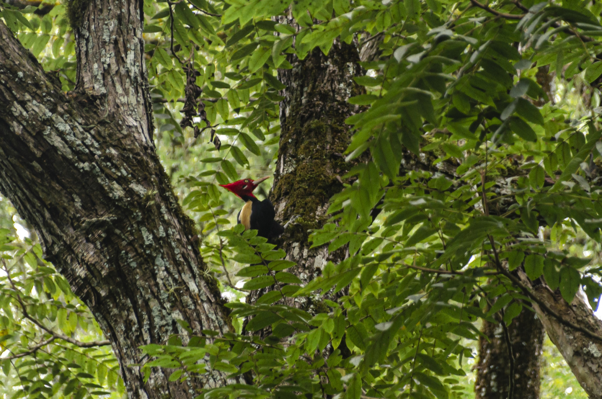
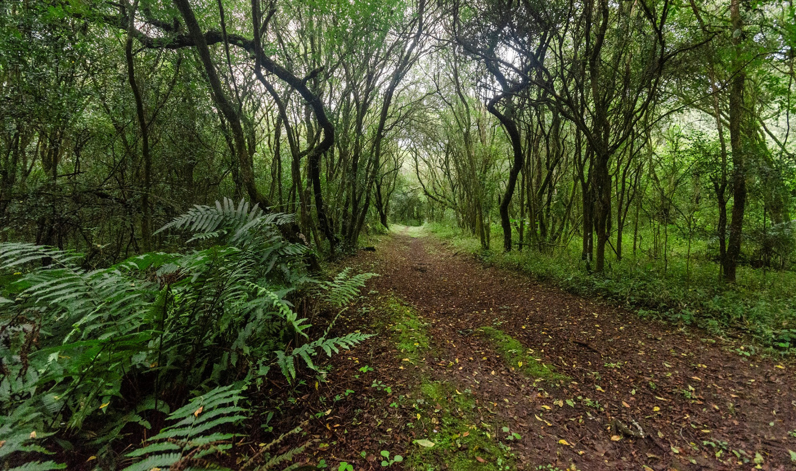
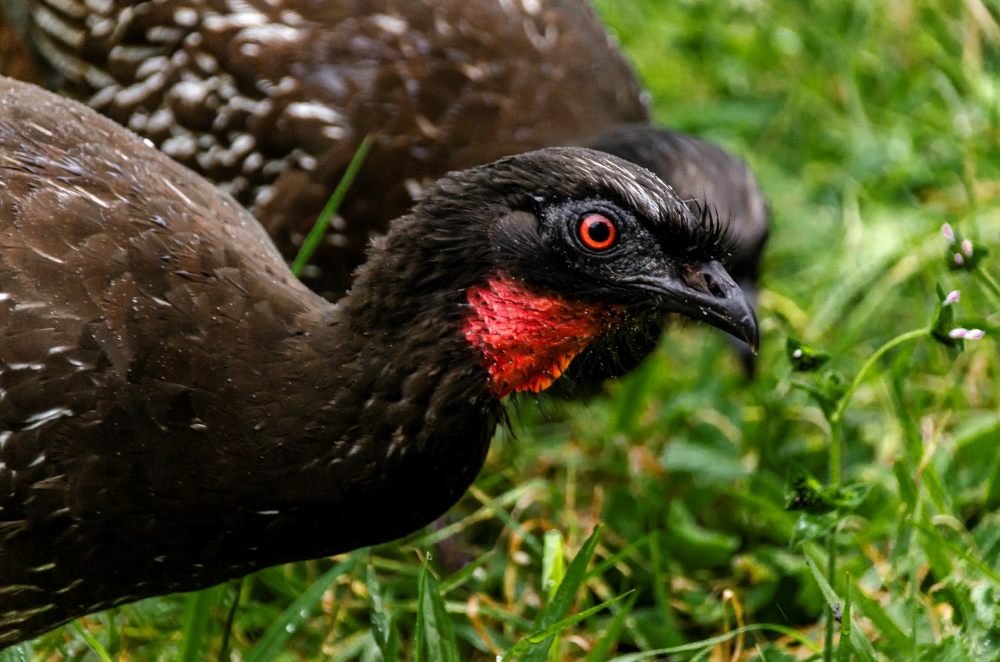
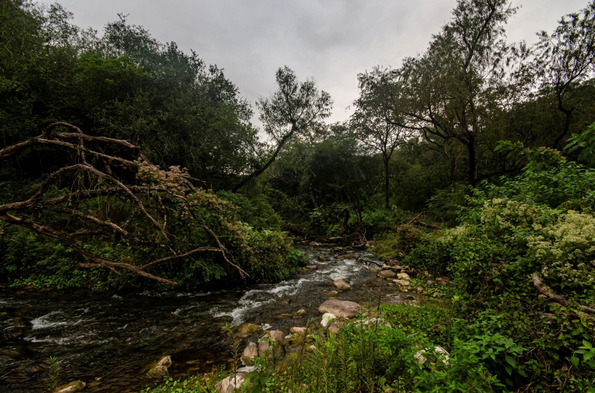

Refugio natural ubicado en las Yungas centrales de Salta, protege una enorme diversidad de flora y fauna. Fue el primer Parque Nacional del Noroeste argentino. Contiene muestras de las ecorregiones de Yungas y Chaco Seco, así como de la transición entre ambos ambientes.
Las temperaturas medias rondan los: 8ºC en invierno, y 21ºC en verano. Llueve entre noviembre y marzo. También se registran temperaturas bajo cero y nevadas en las cumbres de los cerros.
Flora
La selva se distribuye en distintos pisos o estratos a medida que aumenta la altura. El más bajo corresponde al bosque chaqueño serrano con especies como el horco quebracho, el cochucho, el atamisque y los cardones. Luego comienza la selva de transición con tipas y pacaraes, seguida luego por la selva montana con grandes ejemplares de cedro, tarco, tipa y nogal. La selva de mirtáceas donde predomina el palo barroso, el alpamato, el mato, el chal- chal y el güili comienza a partir de los 800 m. Por sobre los 1.500 m crecen bosques de pino del cerro, luego aliso y finalmente la queñoa. Uno de los aspectos más llamativos es la gran variedad de epífitas existente, como la bromelia tanque, los claveles del aire y varias especies de orquídeas. En las partes más altas de los cerros crece el pastizal serrano.
Fauna
La fauna es variada, con aves como la chuña de patas rojas, la charata y la pava de monte común, y también corzuelas pardas y rojas, pecaríes, lobitos de río, tapires, zorros y pumas. Los ríos y arroyos están poblados por varios peces nativos como dorados, bogas, bagres y sábalos. En la Laguna de los Patitos habitan diversas aves acuáticas: la gallareta escudete rojo, la pollona negra, el pato cutirí y el macacito gris.






